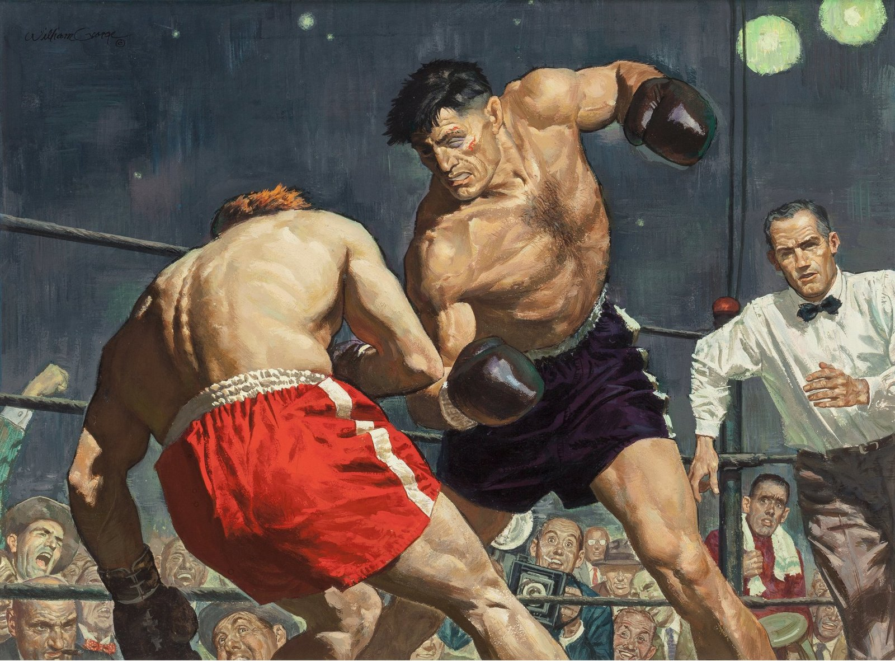

Practice Library
Reading & Listening Library
95 texts, ordered the way you would actually learn them — A1 through C2. Every reading has a recording, vocabulary and exercises you can check yourself, and a Print / Save as PDF button. 48 are ready to read now; the rest are still in their original documents while they are converted.

A1 · Beginner
Beginner — 1 text
Short, slow texts about everyday life, built from the few hundred words a beginner actually has. Every sentence is one idea.
- English you practice: Present simple, to be, basic questions, numbers and times
- Topics: Daily routines, family, food and shopping, getting around
- Ready to read now: 0 of 1
A2 · Elementary
Elementary — 21 texts
Everyday situations you can now tell a story about — what happened yesterday, what you are doing next week — in short, natural paragraphs.
- English you practice: Simple past, present continuous, comparatives, plans with going to
- Topics: Markets and stores, travel and hotels, restaurants, chores, festivals
- Ready to read now: 12 of 21
A Day Hiking in the Mountains
A simple past-tense narrative about one long, good day outdoors.
A Saturday at the Market
A weekly routine at the farmers market — and why it is about more than the shopping.
At the Hotel
Booking a room by phone, and checking out when the bill has something on it you did not expect.
Everyday Service English
Three small situations: when the dish is unavailable, when you need another color, and when you need a stranger's help.
Flying to the United States
Booking a flight, reconfirming it, and getting through passport control — with the words you actually need.
How to Brew Good Coffee
A step-by-step guide — and a useful model for giving instructions in English.
My First Week at Work
Four verbs that give learners trouble — say, tell, speak and talk — in a situation where you actually need them.
Opening a Bistro
One man's plan to open a small restaurant — what he has done, what he is doing now, and what comes next.
Ordering at a New York Pizzeria
A family orders dinner — including the part visitors to the US find hardest: the tip.
The Bus to the Mountains
A brother and sister on a long bus ride — and all the ways to say how much of something there is.
The Day Erica Forgot to Wear Green
A short St. Patrick's Day story — and the American custom behind it.
Two Very Different Trips
Sydney and Bangkok, compared — and the language for recommending a place.
A2 Review
Common Chores II
Grammar Practice I
Grocery Shopping
Exercises on grocery shopping scenarios and vocabulary.
Interrogative Exercises
Practice forming and answering questions in English.
Review Prepositions Some Any No Tenses Comparatives
Say, Talk, Speak, Tell — Exercises
Simple Past + Present Continuous + Future
Simple Past + Present Continuous + Future II
B1 · Intermediate
Intermediate — 38 texts
The working core of the library. Real situations at work and abroad, with the phrasal verbs and collocations that make English sound less like a textbook.
- English you practice: Present perfect, past continuous, conditionals, phrasal verbs, reported speech
- Topics: Business travel, workplace English, American sports and culture, food, technology
- Ready to read now: 16 of 38
A Day in Vienna
A friend arrives for the day — and the small prepositions that carry most of the meaning.
A Day on the Farm
Cattle, paperwork and decisions — and the difference between doing something and making something.
Buying the Laptop
A day of shopping for electronics, and four verbs that English refuses to let you swap.
Cars, Buyers and Batteries
What people buy, what they buy it for, and why battery life is now the question that decides it.
Glamping
Camping with a real bed in it — where the trend came from and who it is for.
How Cachaça Is Made
Fresh sugarcane juice, a copper still, and the one difference that separates it from rum.
How to Read a Beer Menu
Four words — lager, ale, hops, malt — and most of a menu becomes readable.
Learning to Climb
What rock climbing actually involves — the styles, the technique, and what goes in the pack.
Snowy Days
An honest account of winter, from someone who actually lives in it.
The False Wall
A safe is emptied, a note is found, and the person nobody suspected turns out to have done it.
The Golden Gate Bridge
What has stood across the mouth of San Francisco Bay since 1937, and what it has taken to keep it there.
The Interview Room
A detective, a neighbor who says he took the trash out, and one detail that does not fit.
The NFL: America's Biggest Game
How American football works, and the moments and players that made the league famous.
The PE Teacher
Five years of getting children to move, and what she has learned about how to do it.
Three Figures of Christmas
A fourth-century bishop, an Alpine demon and a green creature invented in 1957.
What a Car Is Made Of
Engine, transmission, chassis, suspension, brakes — the parts a mechanic will name, and what each one does.
A Freelance Accounting Assignment
Exercises on vocabulary and scenarios related to freelance accounting.
Animal Solutions
Arriving in Johannesburg
Coffee and It
Exercises combining coffee culture and IT terminology, with answers provided.
Coffee and It Answers
Common Chores
Vocabulary and comprehension exercises on everyday household tasks.
Cybersecurity
Exercises on cybersecurity terminology and scenarios.
Daily Activities
Exercises on describing daily routines and activities.
Kitchen Chaos I
Kitchen Chaos II
Maringá
Milan Restaurants
Exercises on restaurant culture and vocabulary in Milan.
Ny Visitation
Exercises on describing travel and visitation experiences in New York.
Rio De Janeiro Exercises
Exercises on Rio de Janeiro culture.
Santa Catarina
Exercises about the Brazilian state of Santa Catarina.
Southeast Asia Adventure
Exercises on travel and cultural experiences in Southeast Asia.
Travel Dialogues II
Exercises on travel-related conversations and vocabulary.
Two Texts Sp to Pp
Exercises comparing São Paulo and Porto Alegre.
Two Texts Sp to Pp II
Unfortunate Events
Exercises based on narratives about unfortunate events.
Usa Restaurants
Exercises on American restaurant culture and vocabulary.
Verb Tense Review
B2 · Upper Intermediate
Upper Intermediate — 21 texts
Longer texts that argue a point or follow a situation through to its consequences, and the professional register that goes with them.
- English you practice: Passive voice, perfect aspects, modality, register and connectors
- Topics: International business, job interviews, negotiation, media, cultural difference
- Ready to read now: 13 of 21
A Developer's Job Interview
A full technical interview, from the opening question to the closing handshake.
A Journey Through Egypt
Cairo to Alexandria by way of the Nile, and what a country does with four thousand years of inheritance.
A Morning at Home
Tidying a room, cooking breakfast and debugging code — forty phrasal verbs doing ordinary work.
Cape Town
A city between a mountain and an ocean, and what a visitor should actually plan for.
Clarifying Roles and Responsibilities
A project manager and a sales manager work out who can do what, and by when.
Data Centers and Digital Agents
The buildings that make modern AI possible, and the shift from software that answers to software that acts.
North Sentinel Island
A people who have refused contact for as long as anyone has tried to make it — and the law that now protects their refusal.
Romania
Mountains, medieval towns and a Latin language in the middle of Slavic Europe.
Sales Strategy in Modern Business
The vocabulary of a sales team: funnels, metrics, SPIN questions and the language of objection handling.
Setting Off
A trip from the airport to New York to Washington, told almost entirely in phrasal verbs.
Soma Nomaoi
A thousand-year-old cavalry festival in Fukushima, and what it now means to the people who ride in it.
Two Kinds of Problem
A story about coding and jiu-jitsu, and the phrasal verbs that carry a career decision.
Where Technology Comes From
Military money, commercial pressure, and the long argument about who computing is really built for.
American Culture
Explore cultural aspects of the United States through reading and comprehension exercises.
Egypt
Formal Informal
Formula 1
Formula 1 Exercises Answers
Navigating Finance
Exercises on financial terminology and scenarios.
Text Interpretation
Text Interpretation Aesops Fables
Exercises on interpreting Aesop's Fables, with answers provided.
C1 · Advanced
Advanced — 14 texts
Dense, genuinely adult prose — analysis, narrative and technical writing that does not slow down for the reader.
- English you practice: Nuanced modality, complex subordination, inference, tone and implication
- Topics: Executive communication, markets and strategy, society, long-form narrative
- Ready to read now: 7 of 14
America in 1776
A republic founded on an argument rather than a bloodline — and the long distance between the claim and the practice.
Physiological Stressors in Endurance Running
Why runners are sick and why they nearly faint — six systems failing to keep up at once.
Selling Real Estate in a Segmented Market
Why the best agents diagnose before they sell, and treat negotiation as protecting value rather than cutting price.
Technology and Ethics
What a software architect is responsible for once the technical problem has been solved.
The Attention Economy
How platforms engineered for engagement have changed the way we read, argue and decide what is true.
The Economics of a Software Business
A finance meeting at a company that sells to banks, in the compressed register executives actually use.
Two Kinds of Courtesy
Travelling from southern Brazil to Japan, and finding that warmth and order are both forms of consideration.
Haiti
Exercises exploring Haitian culture and history.
Questionnaire Company Management
Questionnaire Company Tech Leader
Shadows in the Server Room
Soothing Texts
Exercises with calming and reflective reading passages.
Trials
Exercises on legal and trial-related vocabulary.